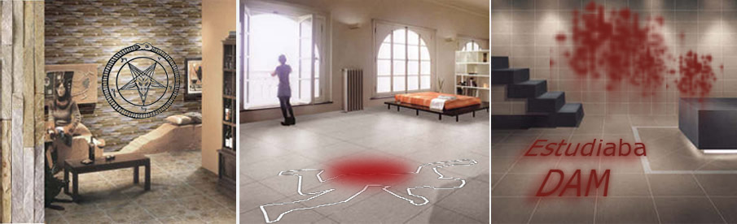

Watery Tiles & Furniture
High Resolution Useless Stuff-WTF Idiotic Product Line
Bienvenidos al sitio web de Watery Tiles & Furniture. Como cualquier empresa moderna, queremos poner a su disposición toda la información de utilidad relativa a nuestros productos a través de Internet.
En nuestra página podrá visualizar todo los productos disponibles en almacén, todos ellos último grito en vanguardia decorativa del hogar. En la sección productos podrá encontrar una exquisita selección de utensilios domésticos absurdos, herramientas para la higiene personal más atrevida y música deliciosa para los más melómanos.

Si aún no conoce nuestra empresa y ha sido por Internet como ha oído hablar de nosotros por primera vez, le rogamos que se ponga en contacto con nosotros para exponernos sus deseos y sus preguntas. Estamos a su entera disposición para asesorarle.
Puede descargar nuestro catálogo 2017 completo y nuestro catálogo para línea de baños WTF In-Sanitary 2018, ambos en formato pdf.

Polígono industrial Wicked Cucumber - C/ Camino Old Cucumber nave 62 - CP 42200 - Onda (Castellón)
Tel: 0034 124 333 022 y 0034 964 333 022- Fax: 0034 964 222 223 - contacto: comercial@wtfgroup.com